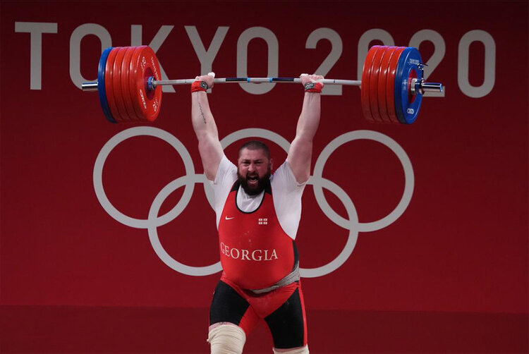

Fitness Disciplines
Powerlifting
A sport where the goal is to lift as much combined weight as possible in the squat, bench, and deadlift. Competitors are sorted into weight classes and are given three chances to complete each lift.
Strongman
The challenges in this discipline are decided by event holder, but they usually have a few things in common. Extreme feats of strength are put on show through a variety of obscure lifts and exercises. Sometimes endurance is also judged by putting competitors through timed strength events.
Bodybuilding
In this discipline, competitors prepare to be judged by their appearance on a stage through the use of resistance training and dieting.
Olympic Lifting
A sport where the goal is to lift a barbell overhead using two methods: The snatch and the clean and jerk. Athletes in this sport are sorted into weight classes and are scored by the combined weight they can lift overhead between the two lifts.
Crossfit
The challenges in this discipline are decided by the event holder, but they usually have a few things in common. The endurance of the athletes is almost always tested through the use of timed workouts with many repetitions. Strength and power are usually tested as well through the use of the olympic lifts.
Track and Field
This sport is comprised of various contests. They usually involve running, sprinting, and jumping. Athletes are not required to compete in all categories, and they usually specialize in just one.
Long-Distance Running
In this sport, competitors typically run distances that are 3km or further. It is largely a test of aerobic and muscular endurance.
